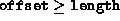

Data Structures and Algorithms
with Object-Oriented Design Patterns in C++
Data Structures and Algorithms
with Object-Oriented Design Patterns in C++


-
-
How much space does the Array<T> class
declared in Program
 use for
an array of integers of length N?
use for
an array of integers of length N? -
How much space does the LinkedList<T> class
declared in Program use to store
a list of n integers?
-
For what value of N/n do the two classes use
the same amount of space?
-
The array subscripting operators defined in Program
only test whether ,
the do not test whether .
Explain why the second test is not required in this implementation.
-
The SetBase member function of the Array<T> class
defined in Program simply changes the value
of the base member variable.
As a result, after the base is changed,
all the array elements appear to have moved.
How might the routine be modified so that the elements of the array
don't change their apparent locations when the base is changed?
-
Write the C++ code for the
assignment operator of the Array<T> class
declared in Program .
-
Which routines are affected if we drop the tail member
variable from the LinkedList<T> class declared in
Program ?
Determine new running times for the affected routines.
-
How does the implementation of the Prepend function
of the LinkedList<T> class defined in Program
change when a circular list with a
sentinel is used as shown in Figure (c).
-
How does the implementation of the Append function
of the LinkedList<T> class defined in Program
change when a circular list with a
sentinel is used as shown in Figure (c).
-
Consider the assignment operator for the LinkedList<T> class
given in Program .
What is the purpose of the test &linkedlist != this
on line 15?
-
Equation is only correct if the subscript
ranges in each dimension start at zero.
How does the formula change when each dimension
is allowed to have an arbitrary subscript range?
-
The alternative to row-major layout of of multi-dimensional
arrays is called column-major order .
In column-major layout the leftmost subscript
expression increases fastest.
For example, the elements of the columns of a two-dimensional matrix
end up stored in contiguous memory locations.
Modify Equation to compute the correct address
for column-major layout.
-
We wish to add an operator+ member function to the
Matrix<T> class declared in Program
that does the usual matrix addition.
Write the C++ code for this member function.
 Copyright © 1997 by Bruno R. Preiss, P.Eng. All rights reserved.
Copyright © 1997 by Bruno R. Preiss, P.Eng. All rights reserved.